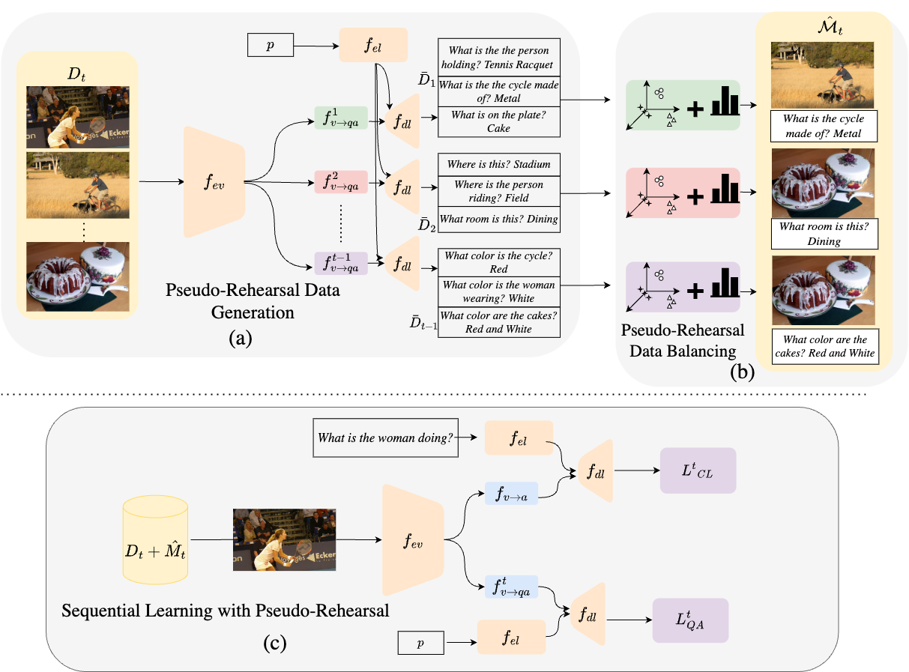
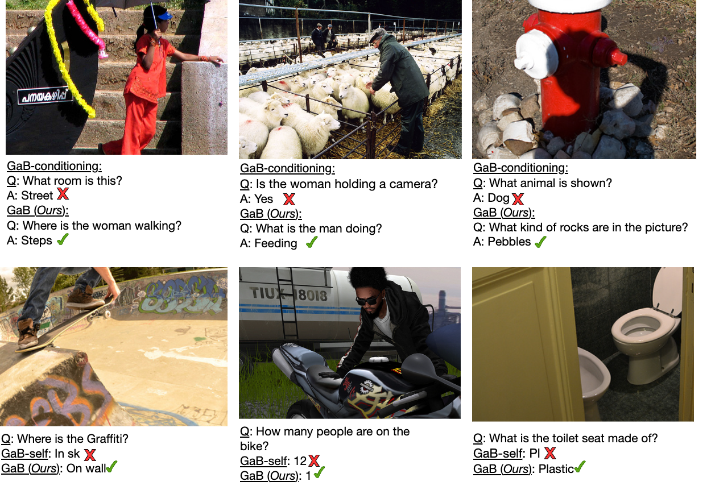

Vision-Language Models (VLMs) have shown significant promise in Visual Question Answering (VQA) tasks by leveraging web-scale multimodal datasets. However, these models often struggle with continual learning due to catastrophic forgetting when adapting to new tasks. As an effective remedy to mitigate catastrophic forgetting, rehearsal strategy uses the data of past tasks upon learning new task. However, such strategy incurs the need of storing past data, which might not be feasible due to hardware constraints or privacy concerns. In this work, we propose the first data-free method that leverages the language generation capability of a VLM, instead of relying on external models, to produce pseudo-rehearsal data for addressing continual VQA. Our proposal, named as GaB, generates pseudo-rehearsal data by posing previous task questions on new task data. Yet, despite being effective, the distribution of generated questions skews towards the most frequently posed questions due to the limited and task-specific training data. To mitigate this issue, we introduce a pseudo-rehearsal balancing module that aligns the generated data towards the ground-truth data distribution using either the question meta-statistics or an unsupervised clustering method. We evaluate our proposed method on two recent benchmarks, VQACL-VQAv2 and CLOVE-function benchmarks. GaB outperforms all the data-free baselines with substantial improvement in maintaining VQA performance across evolving tasks, while being on-par with methods with access to the past data.
Key Contributions
First data-free continual learning method for Visual Question Answering using VLM's own generation capability
Novel GaB (Generation and Balancing) approach that generates pseudo-rehearsal data without storing past task data
Pseudo-rehearsal balancing module to align generated data distribution with ground-truth using meta-statistics or clustering
Comprehensive evaluation on VQACL-VQAv2 and CLOVE-function benchmarks
Performance on-par with data-stored methods while being completely data-free
Method Overview
🔄 GaB: Generation and Balancing
Our approach consists of three main components: (1) Pseudo-Rehearsal Data Generation where we generate questions from previous tasks using new task images, (2) Pseudo-Rehearsal Data Balancing to correct distribution skew using meta-statistics or clustering, and (3) Sequential Learning that combines real and pseudo-rehearsal data for continual learning without catastrophic forgetting.

Pipeline Diagram Here
Figure 1: Overview of our GaB method showing the three-phase approach: (a) Pseudo-Rehearsal Data Generation, (b) Pseudo-Rehearsal Data Balancing, and (c) Sequential Learning with Pseudo-Rehearsal.
Benchmarks
📊 Evaluation on Standard Continual VQA Benchmarks
We evaluate GaB on two challenging continual learning benchmarks: VQACL-VQAv2 and CLOVE-function, demonstrating superior performance over data-free baselines while matching data-stored methods.
Qualitative Results

Qualitative Results Here
Figure 2: Qualitative comparison showing GaB-conditioning vs. our GaB approach across different scenarios including street scenes, farming, and various objects, demonstrating improved question generation and answer accuracy.
Citation
@inproceedings{das2025gab,
title={One VLM to Keep it Learning: Generation and Balancing for Data-free Continual Visual Question Answering},
author={Das, Deepayan and Talon, Davide and Mancini, Massimiliano and Wang, Yiming and Ricci, Elisa},
booktitle={Proceedings of the IEEE/CVF Winter Conference on Applications of Computer Vision (WACV)},
year={2025}
}